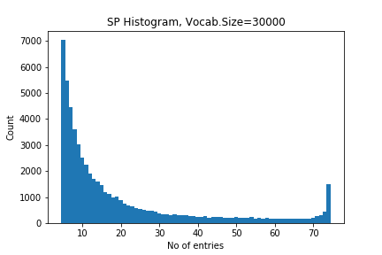

In this paper, an attempt is made to see how the traditional categories for classifying literature in China compare to an analysis of the digital text in these categories. The research is done using the Kanseki Repository as an example.
Most of the texts in the KR are not punctuated, and none of them are tokenized. To eliminate the problem of tokenization, for this research the tool sentencepiece is used.
Sentencepiece, developped by researchers at Google, Inc., uses stochastic methods to find the n most frequent adjoining character strings in a text. These adjoining strings, which are not words in any linguistic sense, are called "sentencepiece". In a training run, the tool will analyse the text and build a model of the text, including a list of the vocabulary (e.g. sentencepieces), which provides the pieces and the frequency of occurrence in the text corpus. This model can than be used to tokenize new texts into sentencepieces, the usual use case for this is building a pipeline for natural language processing. In this paper, however, the vocabulary lists will be used as a proxy for characteristics of the texts for comparison.
Apart from providing the text, the only piece of configuration needed for building the models, and the only one used here is the desired number of entries for the vocabulary list. The number of unique Kanji in the texts is usually around 11000, so the list should have more entries. In preparatory experiments, numbers ranging from 30000 to 120000 have been used, but it turned out that such large numbers are not productive, so for the run described here, only sizes of 30000 and 20000 have been used, to gauge what influence the vocabulary size might have on the outcome.
The KR is organized in 6 large categories, which each have subcategories of varying numbers, altogether there are 75 subcategories. Models have been builded separately for all categories with both vocabulary sizes. The resulting lists of 75 vocabulary lists in each run have then been consolidated into one global list of all sentencepieces in the corpus.
For each of these entries in the list, we recorded wich subcategories contained the entry. Some of the entries occur in all 75 subcategories, while most are only recorded in one. The number of co-occurrences across subcategories can be seen as an indicator of how specific or common a sentencepiece is. Figure 1 and 2 show a histogram of distributions.

Figure 1: Vocabulary size distribution for vs=30000
Figure 2: Vocabulary size distribution for vs=20000
Created: 2019-06-10 Mon 13:36